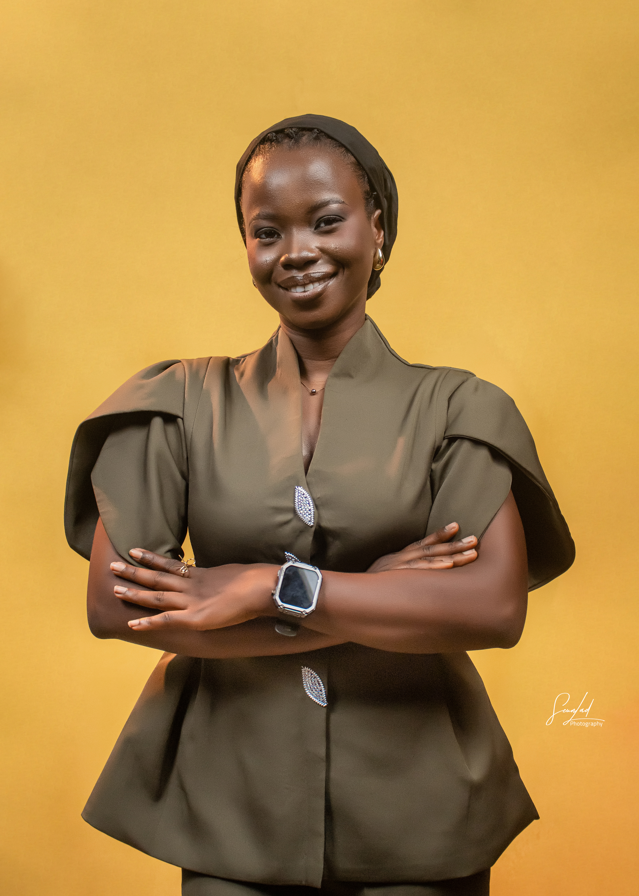

Statistics Graduate | Aspiring Researcher in Causal Inference & Policy Evaluation
I am a First Class Honours graduate in Statistics from the Federal University of Technology, Akure, Nigeria. My academic journey has given me a strong foundation in statistical theory, econometric methods, and applied data analysis using R, Python, and Stata.
My undergraduate thesis on model misspecification in production function estimation sparked my interest in developing robust statistical methods that perform well under real-world conditions. This led me to causal inference—where I now focus on estimating treatment effects using panel data, difference-in-differences, and regression discontinuity designs.
I am actively seeking PhD opportunities where I can develop methodological expertise in causal inference and Bayesian statistics while working on economically meaningful applications—particularly in policy evaluation and development economics.
I am particularly interested in developing methods that are robust to model misspecification and measurement error, with applications in economic policy evaluation.
Federal University of Technology, Akure (FUTA) | 2019–2025
Undergraduate Thesis: Evaluation of Cobb–Douglas Production Function in the Presence of Misspecification Error: A Simultaneous Equation Model
Advisor: Dr O. O. Ojo
Uses Monte Carlo simulations to examine how model misspecification biases estimates. Found that simultaneous equation methods reduce bias compared to single-equation approaches when endogeneity is present.
Applies Bayesian hierarchical models to study energy consumption patterns across BRICS countries, which accounts for country-specific heterogeneity while borrowing strength across the panel for more efficient estimates.
Research Question: Do the determinants of capital structure operate homogeneously across firms, or are effects firm-specific?
Design: Compared pooled OLS, fixed effects, and random effects models across 3 firms (32 years). Hausman test favored FE. Firm-level analysis revealed opposite-signed effects—interest rates affect manufacturing vs. financial firms differently.
Finding: Aggregate models show null results, but firm-level analysis reveals heterogeneity masked in pooled specifications.
Methods: Panel FE/RE, Hausman test, robust SEs, interaction analysis
Tools: Stata (xtreg, xttest3, xtcsd, xtserial)
Research Question: Did the EU's Non-Financial Reporting Directive (NFRD, 2014) change corporate board composition?
Design: Fixed effects regression comparing 588 European companies before vs. after regulation (2008-2022). Each company serves as its own control, eliminating time-invariant confounding.
Finding: Regulation led to strategic optimization—gender diversity (+13.7pp), board independence (+8.5pp), and CSR committees (+7.8%) all increased, while board size decreased slightly. All effects significant at p < 0.001.
Methods: Fixed effects panel regression, hypothesis testing, visualization of time trends
Tools: R (plm, tidyverse, stargazer)
Research Question: Did the 2020 Blackbaud ransomware attack increase operating expenses for affected hospitals?
Design: Compared 25 attacked vs. 34 non-attacked hospitals (2017–2020) using two-way fixed effects DiD. Parallel trends assumption tested visually and statistically (p=0.692).
Finding: Attacked hospitals experienced a 20.4% increase in expenses (p=0.06)—approximately $218M for the average affected hospital.
Methods: DiD, fixed effects, parallel trends testing, event study visualization
Tools: R (fixest, tidyverse, broom)
Overview: Replicating Hanlon's (2018) regression discontinuity design studying the causal effect of historical air pollution on mortality in London (1866–1965). This project builds skills in quasi-experimental methods while exploring connections to modern causal inference challenges.
Methods: Regression Discontinuity Design, local polynomial estimation, placebo tests
Tools: Python (pandas, numpy, statsmodels, rdrobust)
Department of Statistics, Federal University of Technology Akure | October 2024 – October 2025
Conducted time-series analysis, forecasting, and regression modeling using R, Python, and Stata. Contributed to data cleaning, model estimation, and manuscript preparation for academic research projects. Developed skills in applied econometrics and reproducible research workflows.
Skills developed: Time series analysis, forecasting methods, Bayesian estimation, reproducible research workflows, academic writing
Download my full CV for comprehensive details about my education, research experience, technical skills, and academic achievements.
📄 Download Academic CV 📄 Download Resume